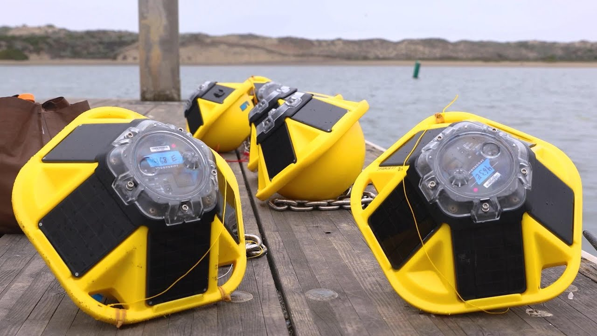
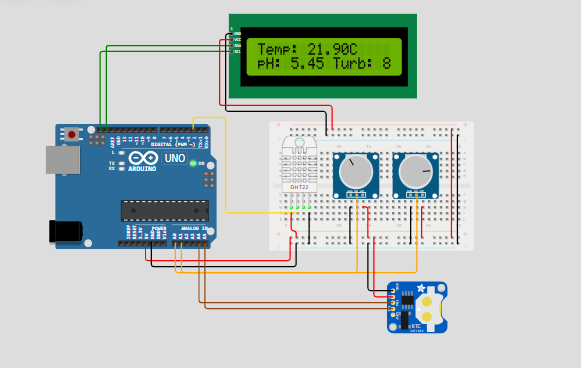
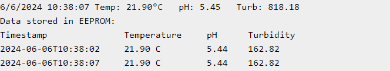

Problema que a solução irá resolver

A poluição dos oceanos está em níveis alarmantes, afetando a biodiversidade marinha e a saúde humana. Plásticos, produtos químicos e outros resíduos prejudicam os ecossistemas aquáticos.
Precisamos de dados precisos para entender a extensão do problema e implementar soluções eficazes para proteger nossos oceanos.
Tecnologia que pretendemos utilizar
Utilizamos sensores IoT para monitoramento contínuo e análise de dados em tempo real. Esses sensores coletam informações sobre níveis de poluição, temperatura da água e, futuramente, medidor de pH.
Os dados são processados e visualizados em dashboards interativos, permitindo a identificação rápida de áreas críticas e a tomada de decisões informadas.
O prototipo
O prototipo tem como objetivo monitorar a saúde dos oceanos, focando em dois parâmetros principais: a temperatura da água e a qualidade da água.
A ideia é criar uma solução que possa alertar e informar as populações costeiras e as empresas que utilizam os mares sobre a saúde dos oceanos, promovendo assim uma gestão sustentável dos recursos marinhos.
Utilizamos nesse prototipo:
- Arduino UNO;
- Sensor de temperatura (DHT 22)
- Display lcd I2c;
- Potenciometro( para simular um sensor de tubidez, ver se a água está turva);
- Potenciometro( para simular um sensor de pH).
- RTC DS1307( para o armazenamento de dados)
Objetivos pretendidos

Nosso principal objetivo é monitorar a saúde dos oceanos, identificar fontes de poluição e reduzir os impactos ambientais. Queremos criar uma plataforma acessível para pesquisadores e autoridades.
Além disso, pretendemos aumentar a conscientização pública sobre a importância da conservação marinha e incentivar ações sustentáveis em comunidades costeiras.
Público que será impactado
Nossa solução é voltada para pesquisadores, ambientalistas, formuladores de políticas, e a comunidade global. Todos se beneficiam de dados precisos e acessíveis sobre a saúde dos oceanos.
Através de parcerias com instituições de ensino e ONGs, também alcançamos estudantes e voluntários interessados em proteger os mares.
Benefícios oferecidos pela solução
Oferecemos dados detalhados e atualizados que auxiliam na implementação de políticas ambientais eficazes. Nossa plataforma ajuda na detecção de desastres ambientais em tempo real.
Além disso, promovemos a educação ambiental, fornecendo informações claras e visualizações intuitivas que facilitam a compreensão do estado dos oceanos.
Como essa solução pode ajudar no dia a dia

Nossa solução facilita a tomada de decisões informadas por parte de autoridades e ambientalistas, resultando em ações mais eficazes para a conservação marinha.
Ao capacitar a comunidade com informações precisas, promovemos mudanças positivas no comportamento, incentivando práticas sustentáveis no dia a dia.